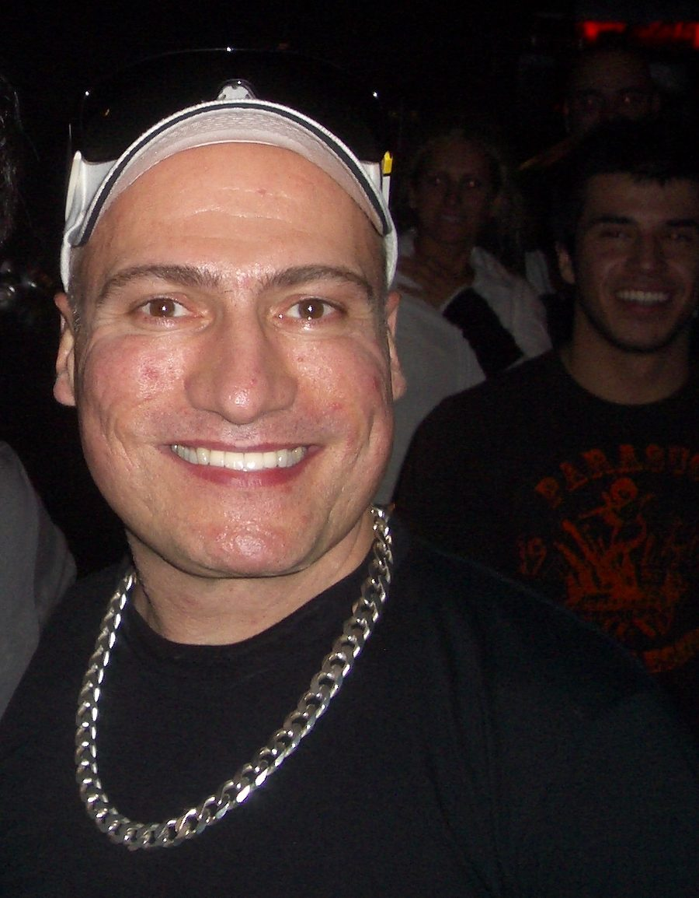

Danny Tenaglia joins the Summadayze tour



It’s been more than a decade in the making, but ITM can now confirm that legendary US DJ/producer Danny Tenaglia is indeed on his way to Australia to party with us over New Years. Future Entertainment says he’ll he joining the massive Summadayze 2010 tour with appearances at the Melbourne, Perth and Gold Coast festivals, with news still pending on where else we can expect to see him around the rest of the country.
What to say about Danny Tenaglia? He’s one of dance music’s most enduring icons, working it behind the decks for more than 25 years and known for both his inhuman mixing skills and his ability to connect with the crowd, with a track selection that goes well beyond his long-term love of house and techno.
Getting his start in New York in the 70s and finding his heart at the legendary Paradise Garage, he later moved onto hugely successful residencies at hotspots like Miami’s Cheers and NYC’s Twilo, releasing seminal artist albums like Hard & Soul, mix compilations like Mix this Pussy and several unforgettable efforts for the Global Underground stable. He’s perhaps most remembered for the trademark 12-hour marathon sets he’s delivered at the Miami Winter Music Conference and beyond.
Brett Robinson from Future Entertainment says it’ll be a landmark tour for his company. “We have been working with Danny and his manager for close to nine years now on his return to Australia, so it’s so satisfying to know that he is finally coming back. Danny’s elusive nature, his absolute scrutiny and selective nature when it comes to the shows he will commit to, his extraordinary profile and his remarkable ability as a DJ makes this without doubt the biggest tour of the year for us.”
“He is definitely one of those DJ’s that changes the way you think about music. He has such a unique ability to make that magic happen. I’ve seen it too many times overseas to mention, so its now with amazing pride that we can bring back the most well over due DJ to tour Australia in the past decade.”
Danny Tenaglia national tour dates, stay tuned to ITM for news on other shows around the country:
Friday January 1st – Summadayze, Melbourne
Sunday 3rd January – Summadayze, Perth
Saturday January 9th – Summafieldayze, Gold Coast